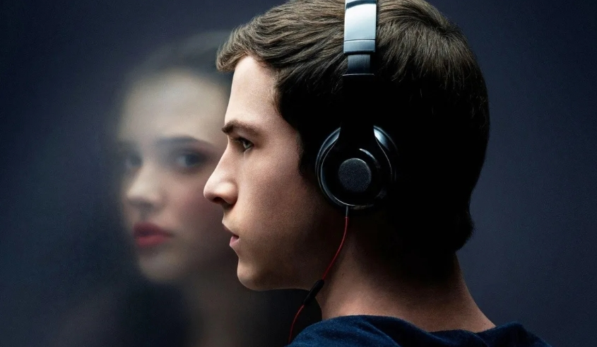

13 REASONS WHY
En un mundo donde las palabras tienen un poder devastador, la tragedia de Hannah Baker se convierte en una dolorosa llamada de atención sobre las cicatrices invisibles que deja el abuso emocional. A través de una serie de cintas, se revela un viaje desgarrador hacia la desesperación de una joven que lucha por encontrar sentido en un entorno lleno de bullying, maltrato y silencio. *13 Reasons Why* es un relato profundo sobre las consecuencias de las acciones humanas, la culpa, el arrepentimiento y el impacto irreversible que pueden tener las palabras y los actos sobre las vidas de los demás.